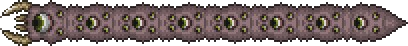

This webpage will cover the basic information such as stats, drops and summoning for each of the following bosses:
King Slime takes the appearance of a much bigger version of a blue slime.
It wears a gold crown on its head and in the middle of the slime with a ninja npc trapped inside.
Eye of Cthulhu is a gigantic floating demon eye ball that is able to summon smaller demon eyes and dash towards the player.
It is one of the first bosses that the player encounters and it has 2 forms.

The Eater of Worlds is a worm-like creature made up of multiple heads that each have their own health points.
The Eater of Worlds can only be found in Corruption generated worlds.
The Brain of Cthulhu is a giant floating brain with 2 forms
The Brain of Cthulhu can only be found in Crimson generated worlds.